Séminaire du Pr Dogné : définition, classification, diagnostic (glycémie, HbA1c, HGPO), physiopathologie des types 1 et 2, complications aiguës et chroniques, prévention. Les séminaires sont « sujets à des questions ouvertes, des questions de développement » comme le reste du cours. Lien direct avec ch2.3 (insuline, glucagon) et ch2.4 (incrétines, GLP-1) et avec le GR (120 jours → HbA1c).
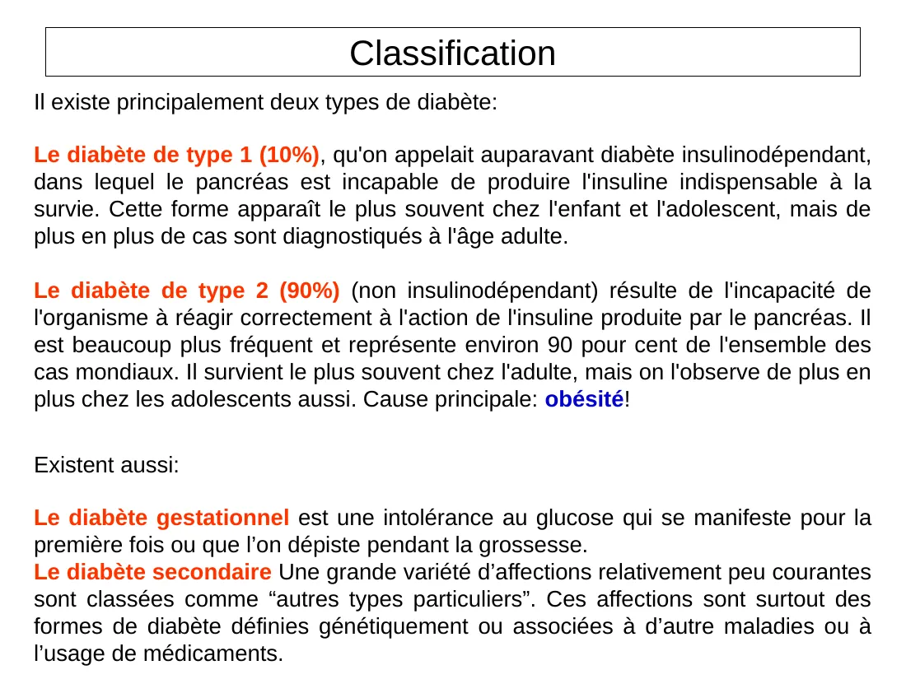
Diabète sucré = hyperglycémie chronique due à un défaut de sécrétion d'insuline absolu (type 1) ou relatif avec insulinorésistance (type 2). Ses séquelles touchent reins, yeux, nerfs, cœur et vaisseaux. « Dia-baïno » = passer au travers : les malades urinent beaucoup (polyurie).
Type 1 (~10 %) : le pancréas ne fait plus d'insuline ; surtout enfant et adolescent. Type 2 (~90 %) : l'organisme répond mal à l'insuline ; adulte, de plus en plus d'adolescents ; cause principale : obésité. Gestationnel : découvert pendant la grossesse. Secondaire : maladie du pancréas, endocrinopathie (ex. Cushing), médicaments (corticoïdes).
OMS : de 200 millions (1990) à 830 millions (2022) de diabétiques. Belgique 2023 : 7,6 % diagnostiqués, mais plus d'un diabétique sur trois l'ignore → prévalence réelle ≈ 10 %.
Critères ADA 2026 (en l'absence d'hyperglycémie manifeste, à confirmer par deux résultats anormaux) : glycémie à jeun ≥ 1,26 g/L · HbA1c ≥ 6,5 % · HGPO 75 g à 2 h ≥ 2,00 g/L · glycémie aléatoire ≥ 2,00 g/L avec symptômes. Prédiabète : à jeun 1,00-1,25 g/L, HGPO 1,40-1,99 g/L, HbA1c 5,7-6,4 %.
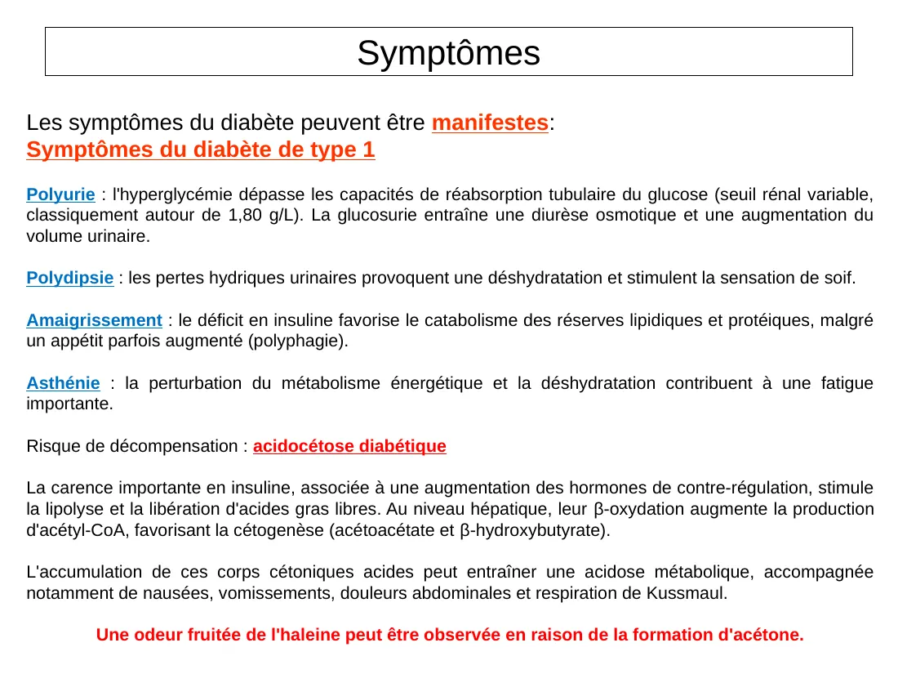
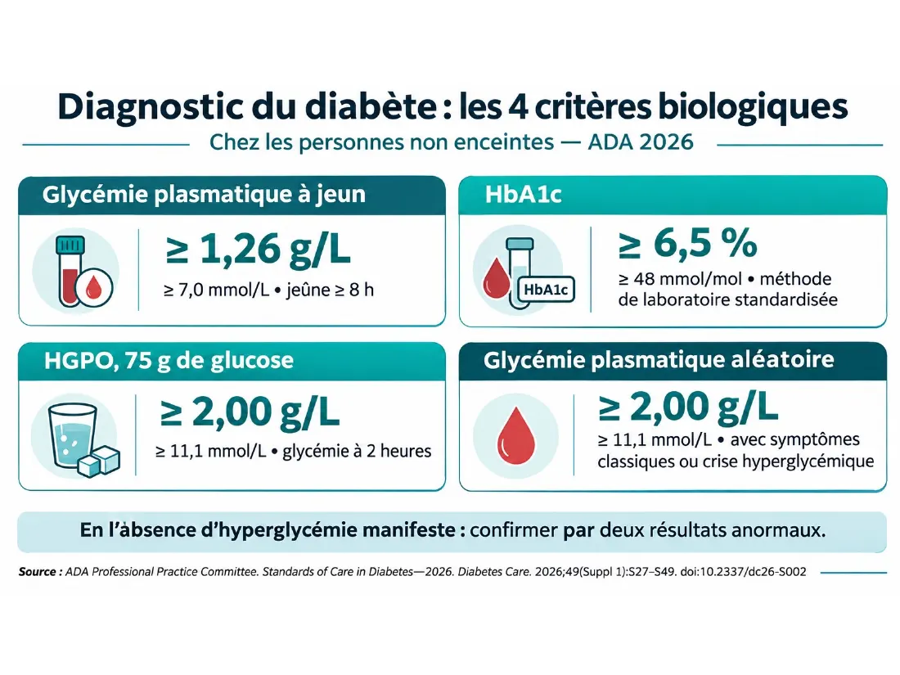
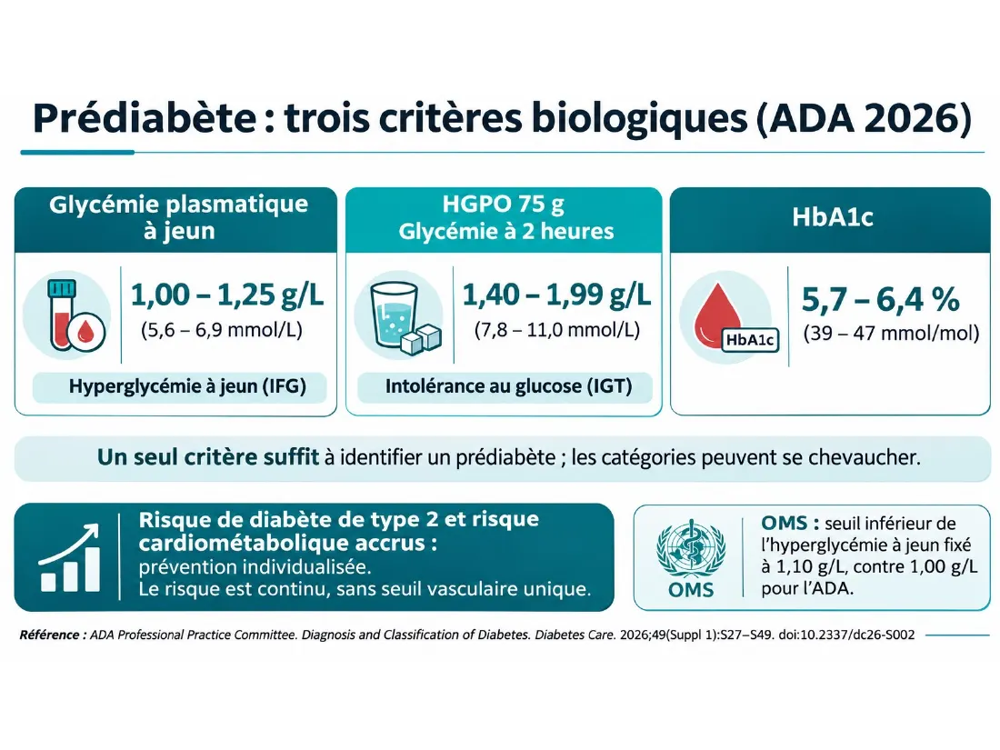
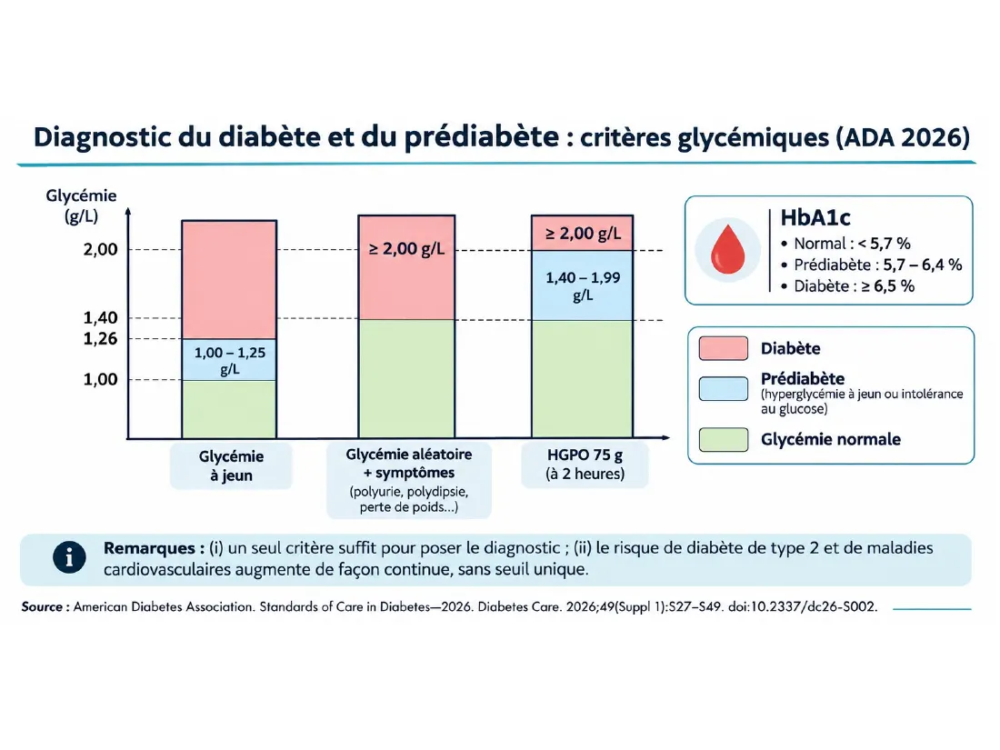
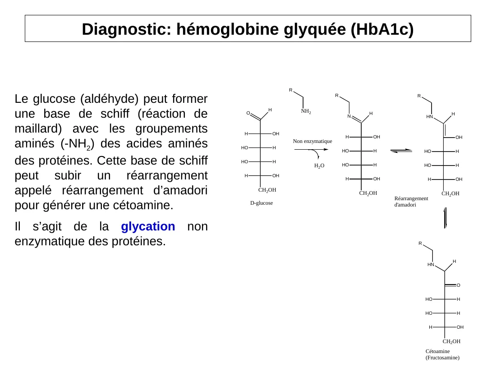
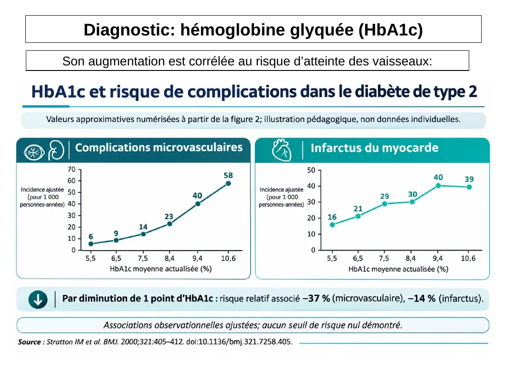
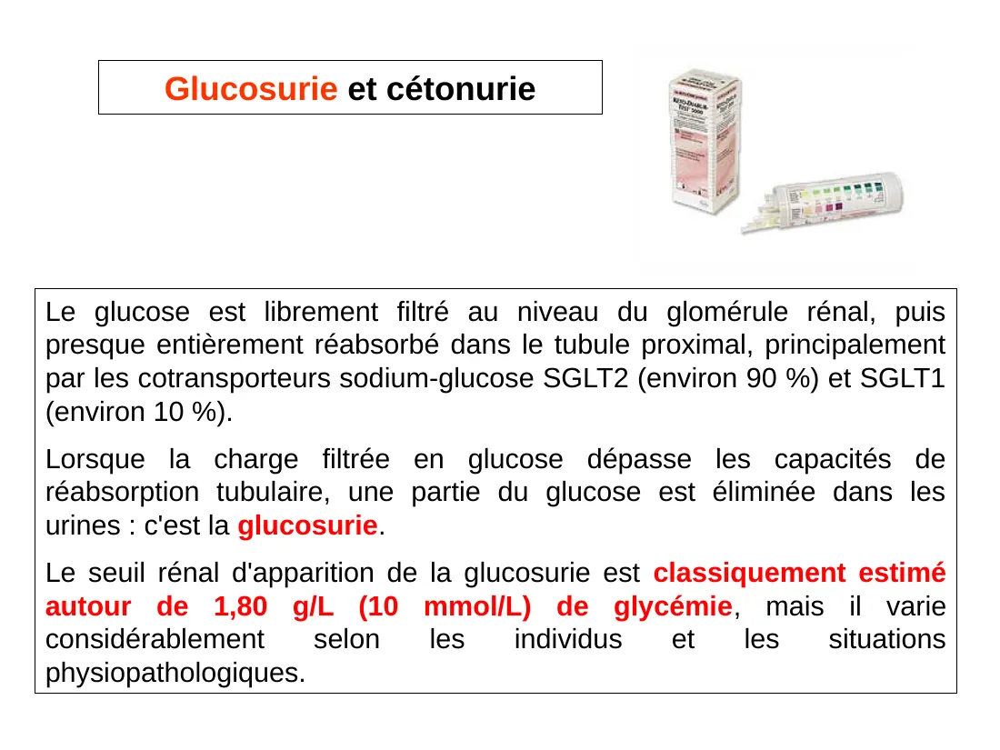
Polyurie (glycémie > seuil rénal ≈ 1,80 g/L → glucosurie → diurèse osmotique), polydipsie (soif), amaigrissement malgré une polyphagie, asthénie. Risque d'acidocétose (odeur d'acétone de l'haleine). Type 2 : symptômes discrets ou absents, diagnostic en moyenne ~7 ans trop tard → dépistage.
Le glucose (aldéhyde) se fixe sans enzyme sur les NH₂ de l'hémoglobine : base de Schiff puis réarrangement d'Amadori → cétoamine = glycation non enzymatique. Comme le GR vit 120 jours, l'HbA1c reflète la glycémie moyenne des 2-3 derniers mois sur une seule prise de sang. 1 point d'HbA1c en moins ≈ −37 % de complications microvasculaires.
Elle dépend de la durée de vie des GR : si elle diminue (hémolyse, saignement, anémie régénérative), l'HbA1c est faussement basse ; une carence en fer peut l'augmenter.
Le glucose filtré est réabsorbé par SGLT2 (~90 %) et SGLT1 ; au-delà du seuil (~1,80 g/L), il passe dans l'urine (bandelette). Cétonurie (acétoacétate) : jeûne, régime cétogène ou carence en insuline. Le peptide C (libéré avec l'insuline par la proinsuline) mesure la sécrétion propre du patient, même s'il s'injecte de l'insuline (RS, 21/09).
Maladie auto-immune en 3 stades : 1) ≥ 2 auto-anticorps, glycémie normale ; 2) anticorps + dysglycémie ; 3) diabète clinique. Anticorps : anti-GAD65, anti-IA-2, anti-ZnT8, anti-insuline. Intérêt : surveiller et éviter l'acidocétose révélatrice.
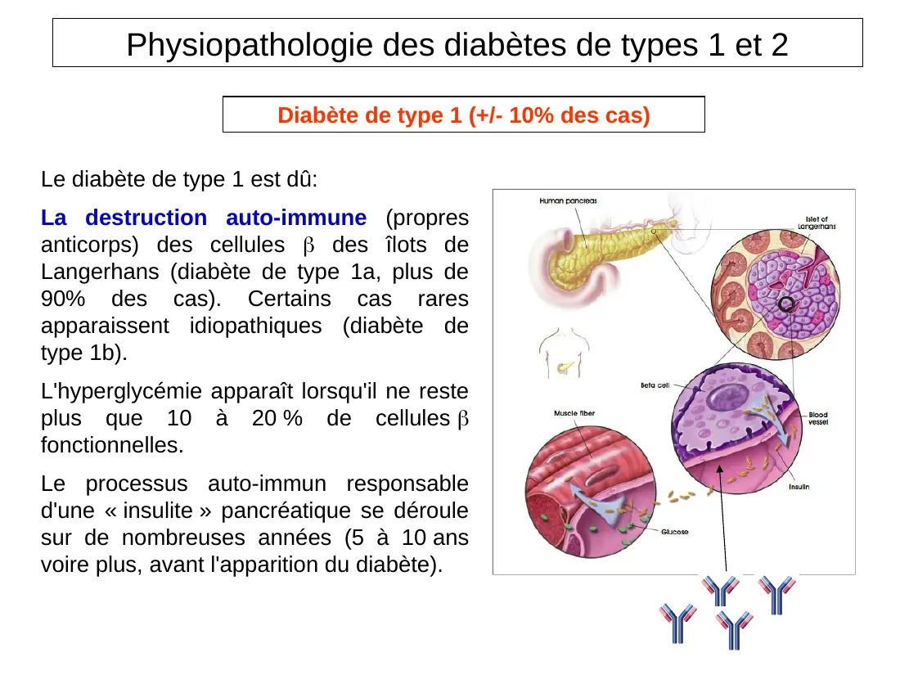
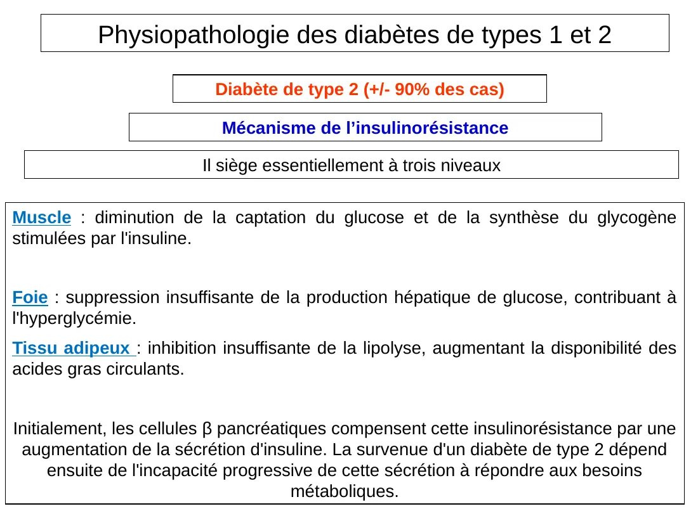
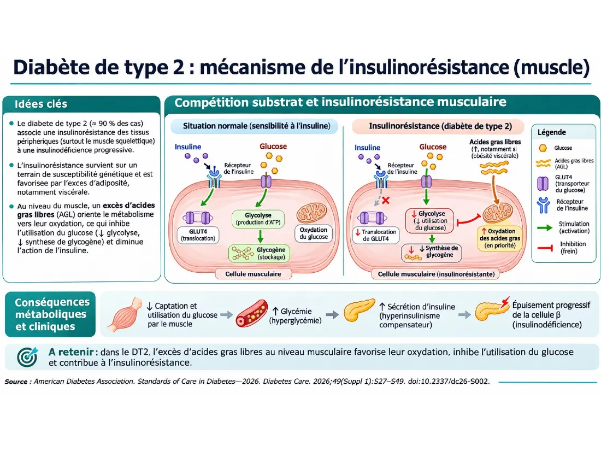
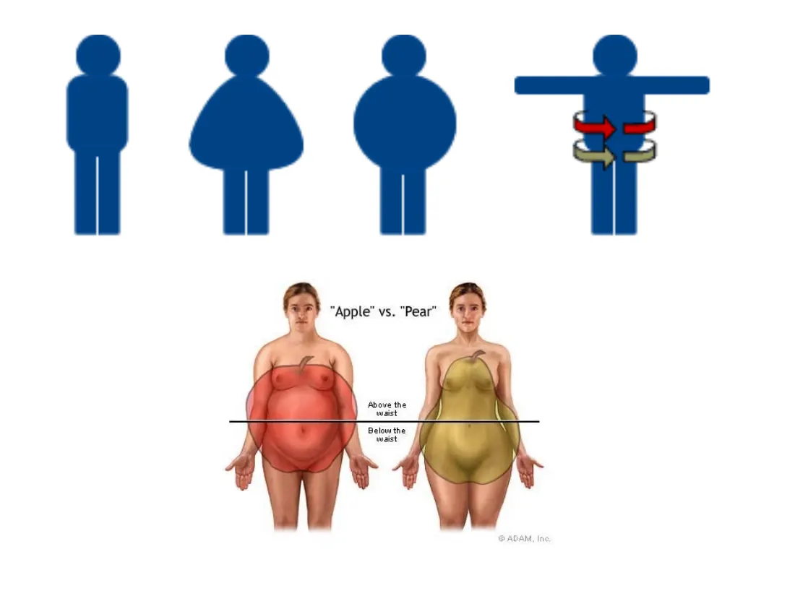
Destruction auto-immune des cellules β des îlots de Langerhans (« insulite », 5-10 ans ou plus). L'hyperglycémie n'apparaît que lorsqu'il ne reste plus que 10-20 % de cellules β. Terrain génétique + facteurs environnementaux (gradient nord-sud : un enfant finlandais a 7-8 fois plus de risque) ; virus suspectés.
Gènes de susceptibilité + environnement (graisses saturées, sucres rapides, sédentarité). L'anomalie de départ est l'insulinorésistance : les β compensent par un hyperinsulinisme pendant 10-20 ans, puis s'épuisent → insulino-déficience relative. Siège surtout dans le muscle : lipides ectopiques (DAG, céramides) → voie IRS-PI3K-Akt altérée → moins de GLUT4 à la membrane. Foie : production de glucose mal freinée. Tissu adipeux : lipolyse mal freinée.
Le tissu adipeux androïde viscéral libère beaucoup d'acides gras vers le foie et le muscle, où ils s'accumulent et bloquent la signalisation de l'insuline. La répartition gynoïde (cuisses, fesses) est moins liée à l'insulinorésistance. On l'estime par le tour de taille.
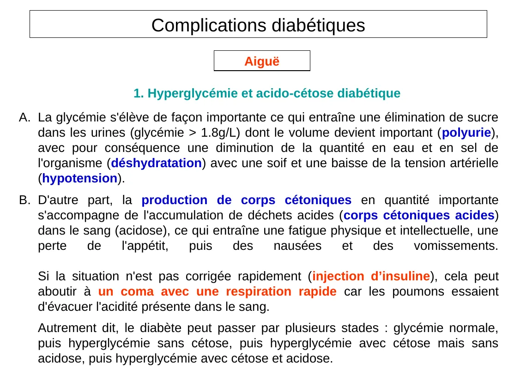
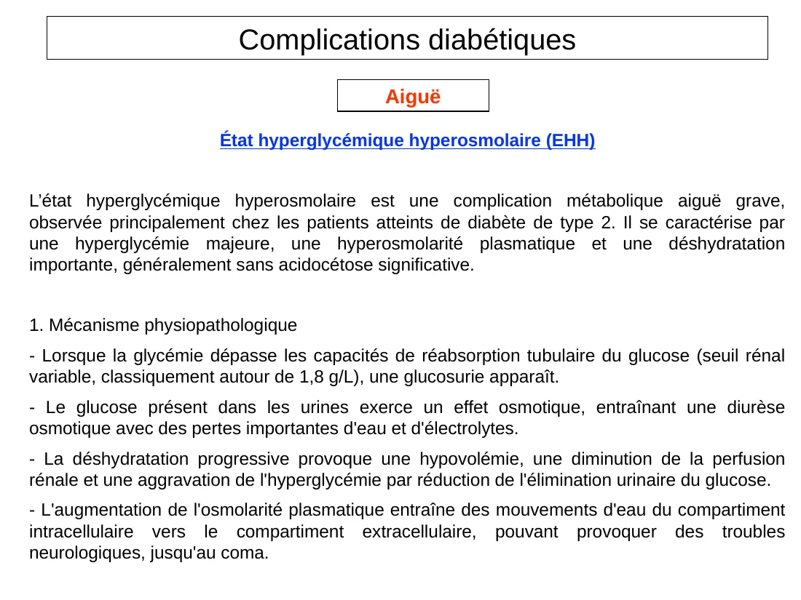
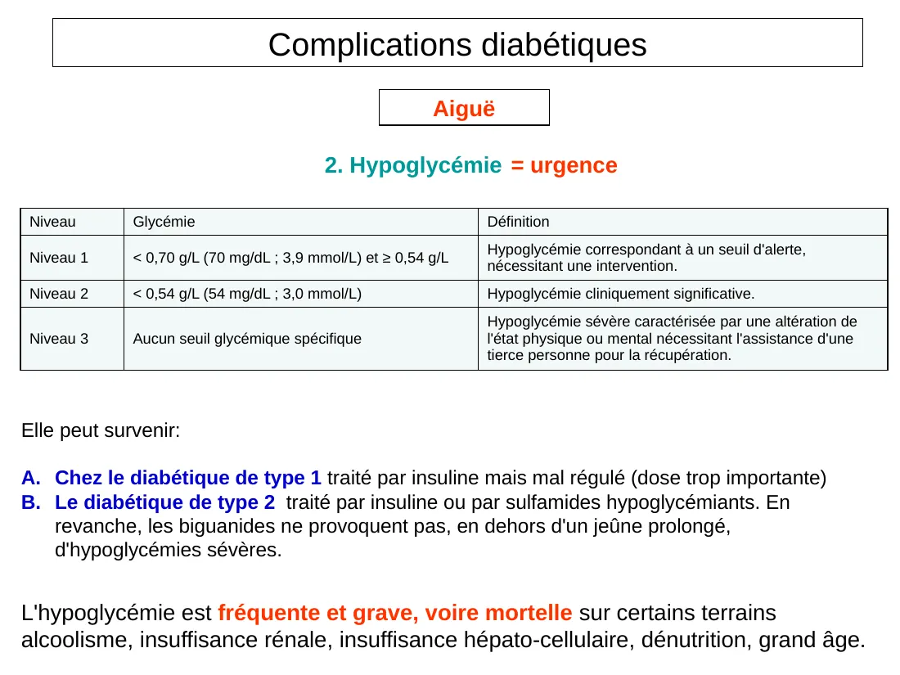
Pas assez d'insuline + hormones de contre-régulation → lipolyse → β-oxydation hépatique → excès d'acétyl-CoA → corps cétoniques (acétoacétate, β-hydroxybutyrate) → acidose. Plus glycémie > 1,8 g/L → polyurie, déshydratation, hypotension. Nausées, vomissements, puis coma avec respiration rapide (Kussmaul : on évacue le CO₂). Traitement : insuline (et réhydratation).
Hyperglycémie majeure + hyperosmolarité + déshydratation profonde, sans acidocétose significative (il reste assez d'insuline pour freiner la lipolyse). Diurèse osmotique → hypovolémie → moins d'élimination du glucose → cercle vicieux ; l'eau sort des cellules (cerveau : troubles de la conscience).
Niveau 1 < 0,70 g/L ; niveau 2 < 0,54 g/L ; niveau 3 : besoin d'un tiers. Causes : insuline trop dosée, sulfamides hypoglycémiants (les biguanides comme la metformine n'en donnent pas, sauf jeûne). Signes adrénergiques (sueurs, palpitations, faim, tremblements) puis neuroglycopéniques (troubles de la vue, confusion, convulsions, coma). Grave chez l'alcoolique, l'insuffisant rénal ou hépatique, la personne âgée.
Le cerveau n'a que le glucose comme carburant : sans lui, il souffre en minutes (coma, séquelles, décès). JMD : « vous pouvez vivre des années avec une hyperglycémie… l'hypoglycémie aiguë entraîne un risque mortel ».
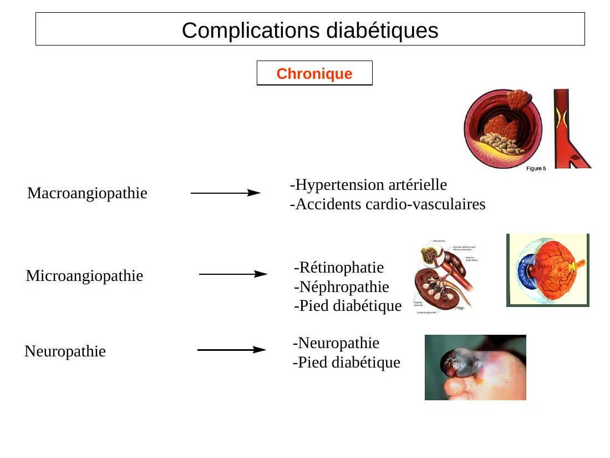
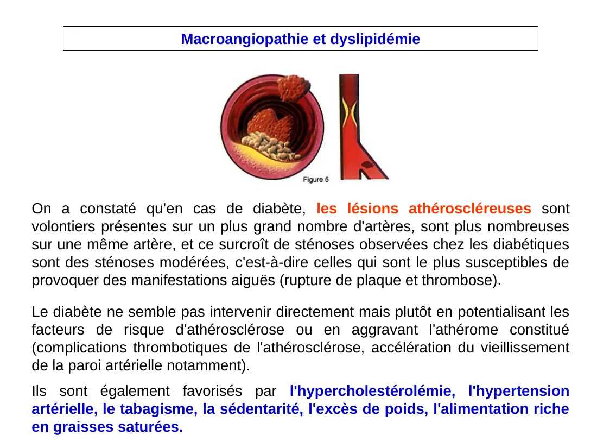
Petits vaisseaux : rétinopathie (œil), néphropathie (rein), neuropathie. Théorie métabolique : toxicité du glucose (glycation des protéines, produits de glycation avancée), aggravée par l'HTA et les dyslipidémies.
Athérosclérose plus étendue et plus précoce : infarctus, AVC, artérite des membres inférieurs ; facteurs aggravants : HTA, hypercholestérolémie, tabac, sédentarité, surpoids. Première cause de mortalité du diabétique de type 2.
Neuropathie : ~50 % après 20 ans de diabète ; polyneuropathie (fourmillements, perte de sensibilité aux pieds), mononeuropathies, neuropathie végétative (digestion, vessie, cœur). Infections favorisées (immunité diminuée). Pied diabétique : neuropathie + artériopathie + déformations → ulcères (19-34 % au cours de la vie), amputations. Conseil officinal : examiner les pieds chaque jour.
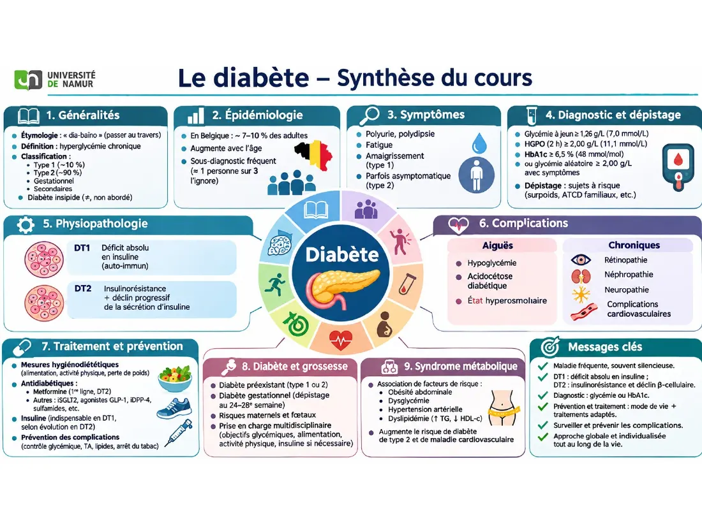
1) Alimentation équilibrée et individualisée ; 2) maîtrise du poids ; 3) activité physique régulière (la contraction musculaire fait entrer le glucose par GLUT4 sans insuline, et améliore ensuite la sensibilité à l'insuline) ; 4) arrêt du tabac. Les médicaments sont vus en pharmacologie ; JMD a présenté les agonistes du GLP-1 au ch2.4 (perte d'appétit, perte de poids).
Pas d'enregistrement du séminaire. Ce qui suit vient des autres cours où JMD et RS ont parlé du diabète.
Questions reformulées à partir du plan du séminaire et des points relevés dans les autres cours de JMD.
Un adolescent maigrit, boit et urine beaucoup ; il arrive aux urgences confus, avec une haleine qui sent la pomme et une respiration rapide. Expliquez.